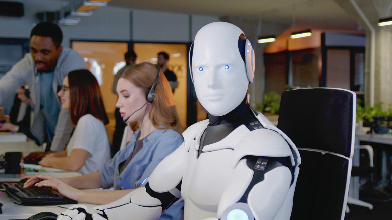

La irrupción masiva de la Inteligencia Artificial (IA) generativa en campos como el arte, la escritura y
la música ha desatado un debate que va más allá de lo tecnológico: ¿estamos presenciando la
obsolescencia de la creatividad humana o, por el contrario, estamos ante una nueva herramienta que
amplificará nuestras capacidades?
En mi opinión, quienes ven a la IA como un simple rival que robará trabajos están simplificando en exceso
la naturaleza de la creatividad. El arte y la innovación nunca han dependido únicamente de la habilidad
técnica, sino de la intención, la experiencia vivida y el contexto emocional del creador. Una IA puede
generar millones de imágenes estéticamente agradables, pero carece de la capacidad de experimentar el
fracaso, el amor o la duda, elementos esenciales que dan alma a una obra.
Es cierto que la IA está redefiniendo los límites de lo que consideramos "original". Hoy, un diseñador ya
no necesita pasar horas en tareas repetitivas; puede delegar la generación de bocetos o variantes a un
algoritmo. Esto no es una pérdida, sino una liberación de tiempo que debe ser reinvertida en la
verdadera función del artista: conceptualizar, dirigir y refinar la narrativa detrás de la obra.
"El arte y la innovación nunca han dependido únicamente de la habilidad técnica, sino de la **intención,
la experiencia vivida y el contexto emocional** del creador."
Eventos y Actividades Destacadas
Propiedad Intelectual: Es urgente que las leyes se adapten para proteger los derechos de los
artistas cuyo trabajo se utiliza para entrenar estos modelos, garantizando una compensación justa.
Fomento de la 'Humanidad': Las escuelas deben enfocarse más que nunca en el desarrollo del
pensamiento crítico, la filosofía y la emoción, ya que estas son las áreas que la IA nunca podrá
replicar auténticamente.
Colaboración Hombre-Máquina: Debemos ver a la IA como una paleta de colores infinita o una
sinfonía de herramientas que, bajo la dirección de la mente humana, puede alcanzar nuevos horizontes
creativos.
El Futuro del Trabajo en la Era de la Inteligencia Artificial
La llegada de la Inteligencia Artificial (IA) ha generado una ola de incertidumbre en el mundo laboral.
Muchos temen que la automatización y los algoritmos inteligentes reemplacen a los trabajadores humanos,
llevando a una crisis de empleo sin precedentes. Sin embargo, creo que esta perspectiva es demasiado
pesimista y no considera las oportunidades que la IA puede ofrecer.

En primer lugar, es importante reconocer que la historia ha demostrado que la tecnología, aunque
disruptiva, también ha sido un motor de creación de empleo. La Revolución Industrial, por ejemplo,
desplazó ciertos trabajos, pero también generó nuevas industrias y roles que antes no existían. De
manera similar, la IA tiene el potencial de crear empleos en áreas como el desarrollo de software, la
ética tecnológica y la gestión de datos.
Además, la IA puede complementar las habilidades humanas en lugar de reemplazarlas. Tareas repetitivas y
rutinarias pueden ser automatizadas, liberando a los trabajadores para enfocarse en actividades que
requieren creatividad, empatía y pensamiento crítico. Profesiones como la medicina, la educación y el
arte pueden beneficiarse enormemente de esta colaboración hombre-máquina.
"La IA puede complementar las habilidades humanas en lugar de reemplazarlas."
Estrategias para Adaptarse al Cambio
Educación Continua: Los trabajadores deben estar dispuestos a aprender nuevas habilidades y
adaptarse a las demandas cambiantes del mercado laboral.
Políticas Públicas: Los gobiernos deben implementar políticas que apoyen la transición
laboral,
incluyendo programas de reentrenamiento y redes de seguridad social.
Cultura Empresarial: Las empresas deben fomentar una cultura de innovación y adaptabilidad,
promoviendo la colaboración
entre humanos y máquinas.
El Teletrabajo y la Descentralización Urbana: ¿El Fin de la Megalópolis?
La pandemia de COVID-19 aceleró una tendencia que ya estaba en marcha: el teletrabajo. Esta modalidad ha
demostrado que muchas tareas pueden realizarse de manera efectiva desde cualquier lugar, lo que plantea
la pregunta: ¿estamos al borde del fin de las megalópolis?
En mi opinión, el teletrabajo tiene el potencial de descentralizar las grandes ciudades, reduciendo la
congestión urbana y mejorando la calidad de vida. Las personas ya no están atadas a vivir cerca de sus
lugares de trabajo, lo que podría llevar a un resurgimiento de las áreas rurales y suburbanas.
Sin embargo, este cambio también presenta desafíos. La infraestructura tecnológica debe ser robusta y
accesible para todos, y las empresas deben encontrar formas de mantener la cultura corporativa y la
colaboración a distancia.
"El teletrabajo tiene el potencial de descentralizar las grandes ciudades, reduciendo la congestión
urbana y mejorando la calidad de vida."
Consideraciones para el Futuro
Infraestructura: Invertir en tecnología y conectividad para garantizar que el teletrabajo sea
viable en todas las regiones.
Equilibrio Vida-Trabajo: Fomentar políticas que promuevan un equilibrio saludable entre la
vida personal y profesional.
Redefinición Urbana: Repensar el diseño de las ciudades para adaptarse a una población más
dispersa y menos dependiente de los centros urbanos.